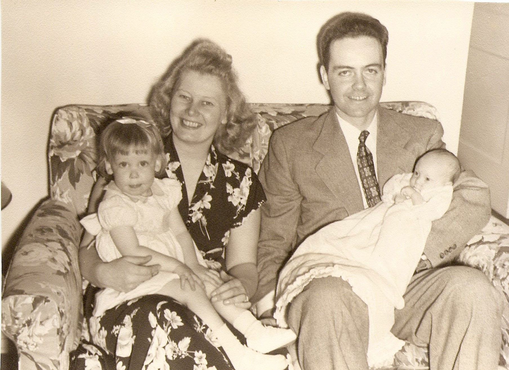
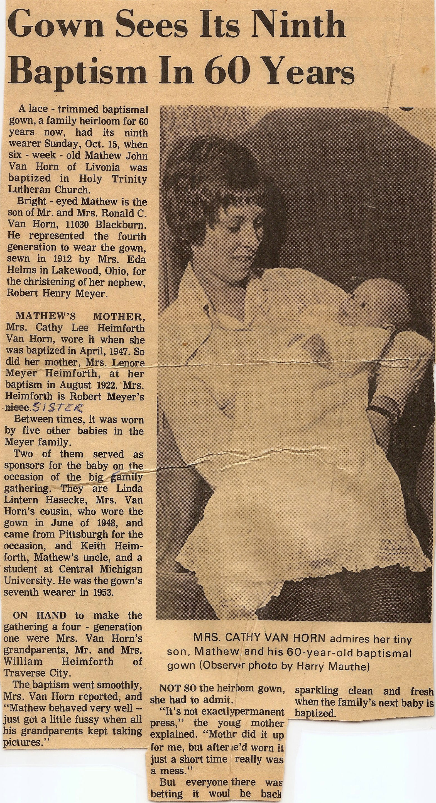
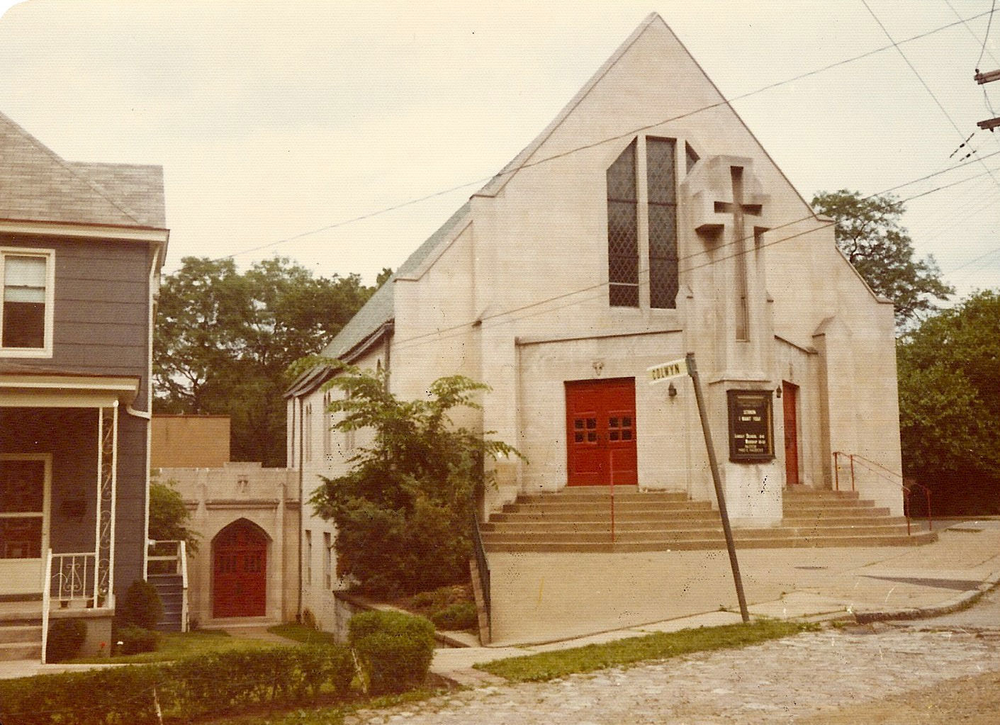
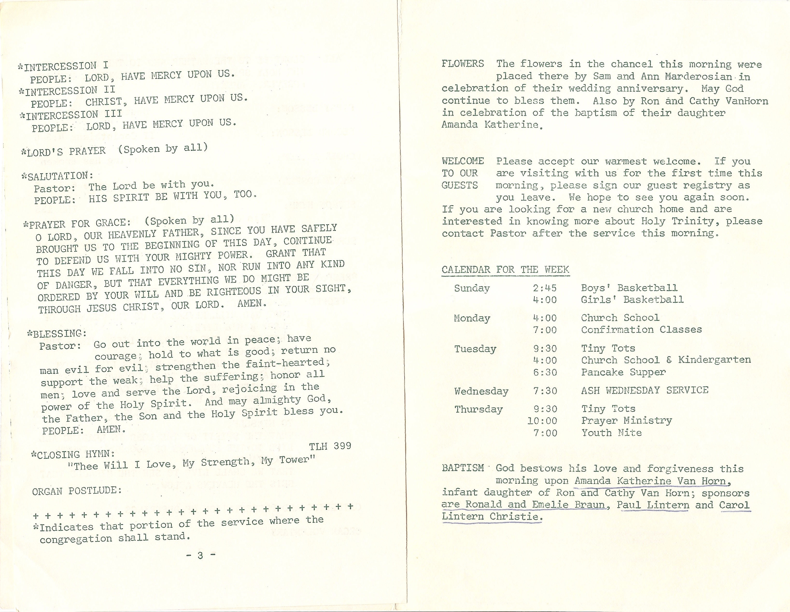
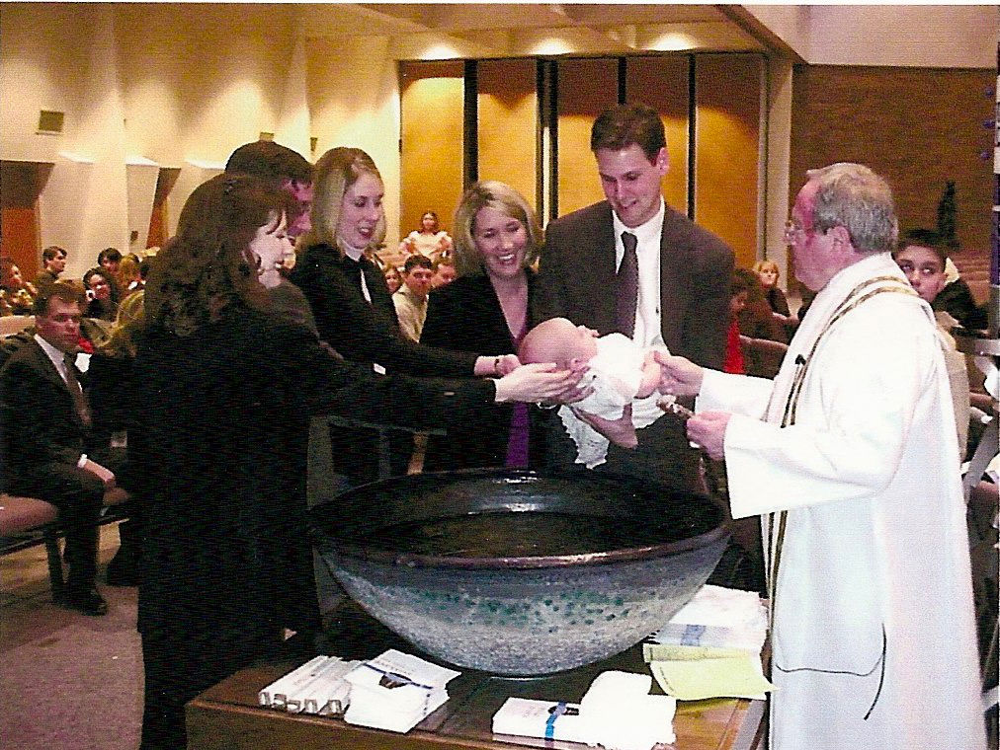
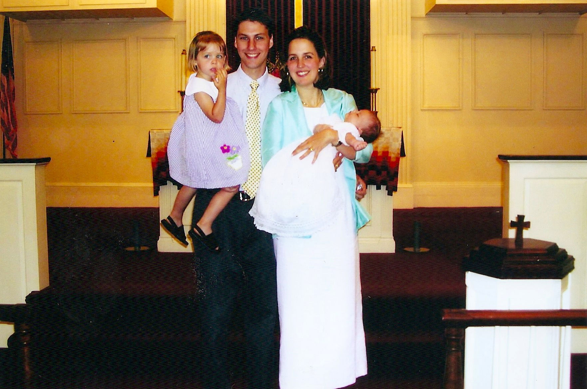
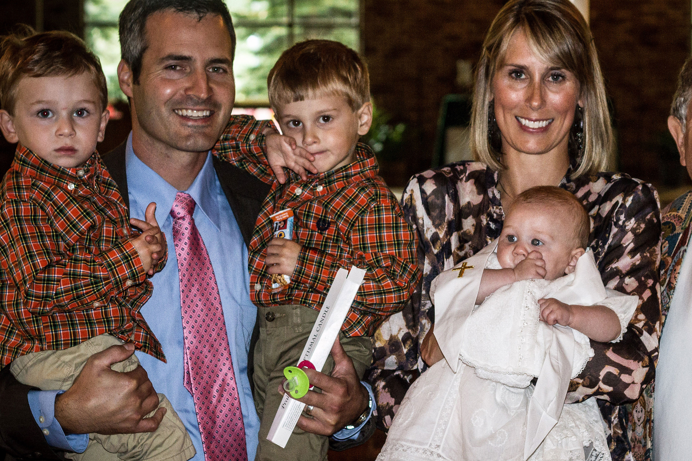

If you are wanting to print from the website, firefox has proven to be the best option to fit all the pages properly. That is how I created the pdf version. If you have any questions, comments, or updates feel free to email me.
mark@lintern.us
Script Font
The Meyer Baptismal Gown History Book
Contents
-
-
- Robert Henry Meyer
- Ruth Esther Meyer
- Lenore Kathryn Meyer
-
-
-
XX
The Dress

May 1985, 73 years old.
The Dress was made for Robert Henry Meyer by Eda Helms, wife of August Helms, in March of 1912. August Helms was the brother of Robert's mother, Martha Helms Meyer.
XX
First Generation
The dress was first worn by Robert Henry Meyer at his baptism in April 1912. He was the son of Theodore Wilhelm and Martha Marie Helms Meyer. Trinity Lutheran Church - Cleveland, Ohio.
The Second to wear the dress was his sister, Ruth Esther Meyer, at her baptism, July 1920. Trinity Lutheran Church - Cleveland, Ohio.
The third to wear it was his second sister, Lenore Kathryn Meyer, at her baptism, August 1922. Trinity Lutheran Church - Cleveland, Ohio.
XX
#1 Robert Henry Meyer
April, 1912
#2 Ruth Esther Meyer
July, 1920
#3 Lenore Kathryn Meyer
August, 1922

Lenore, Bob, Ruth (1992) all were baptized in this gown.

Ruth, Bob, Lenore (July 18th, 1995)
Ruth's 75th Birthday

Trinity Lutheran Church - Cheveland, OH
XX
#4 Cathy Lee Heimforth
May, 1947
Cathy Lee Heimforth, daughter of John and Lenore (nee Meyer) was baptized in May 1947 at Redeemer Lutheran Church - Detroit, Michigan.

Detroit MI, at Grandma and Grandpa Meyer's.
XX
#5 Linda Ruth Lintern
June, 1948
Linda Ruth Lintern, daughter of Lawrence and Ruth (nee Meyer) Lintern, was baptized in June 1948 at Redeemer Lutheran Church - Detroit, Michigan.

Linda Ruth Lintern

Cathy Heimforth and Linda Lintern
XX
#6 Carol Adele Lintern
May, 1950
Carol Adele Lintern, daughter of Lawrence and Ruth (nee Meyer) Lintern, was baptized in May 1950 at Gloria Dei Lutheran Church - Detroit, Michigan.

Carol Adele Lintern

Carol Adele Lintern

Linda, Ruth, Lawrence, Carol
XX
#7 Keith William Heimforth
May, 1953
Keith William Heimforth son of John and Lenore (nee Meyer) Heimforth was baptized in May 1953 at Faith - Outer Drive Lutheran Church - Detroit, Michigan

Keith William Heimforth

John, Cathy, Lenore, Keith
XX
#8 Paul Lawrence Lintern
July, 1956
Paul Lawrence Lintern, son of Lawrence and Ruth (nee Meyer) Lintern, was baptized in July 1956 at Gloria Dei Lutheran Church - Detroit, Michigan.

Paul Lawrence Lintern

Paul, Ruth, Carol, Linda, Lawrence

Carol, Linda, Paul
XX
#9 Matthew John Van Horn
October 14th, 1972
Matthew John Van Horn, son of Ronald and Cathy (nee Heimforth) Van Horn was baptized on October 14th, 1972 at Holy Trinity Lutheran Church - Livonia, Michigan.
XX
#9 Matthew John Van Horn

XX
#9 Matthew John Van Horn
XX
#10 Edward Brooke Hasecke
December 24th, 1974
Edward Brooke Hasecke, son of Frederick and Linda (nee Lintern) Hasecke, was baptized on December 24, 1974 at Trinity Lutheran Church - Pittsburgh, Pennsylvania.

Edward Brooke Hasecke

Trinithy Lutheran Church
XX
#10 Edward Brooke Haseske
XX
#11 Brian Russell Van Horn
October 12th, 1975
Brian Russell Van Horn, son of Ronald and Cathy (nee Heimforth) Van Horn, was baptized on October 12th, 1975 at Holy Trinity Lutheran Church - Livonia, Michigan.

Brian Russell Van Horn

William and Nancy Brown
XX
#11 Brian Russell Van Horn
XX
#12 Amanda Katherine Van Horn
February 20th, 1977
Amanda Katherine Van Horn, daughter of Ronald and Cathy (nee Heimforth) Van Horn, was baptized on February 20th, 1977 at Holy Trinity Lutheran Church - Livonia, Michigan.
Amanda Katherine Van Horn
Amanda Katherine Van Horn, Paul and Carol Lintern all were baptized in this gown.
Sponsors, Paul and Carol Lintern
Ronald and Emily Braun
XX
#12 Amanda Katherine Van Horn

XX
#13 Adam Scott Hasecke
October 28th, 1978
Adam Scott Hasecke, son of Frederick and Linda (nee Lintern) Hasecke, had his baptism affirmed on October 29th, 1978 at St. Paul's Lutheran Church - Toledo, Ohio.

God Parents Cathy (Heimforth) Van Horn and Paul Lintern

Adam Scott Hasecke

St. Paul's Lutheran Church
XX
#13 Adam Scott Hasecke
XX
#14 Katherine Marie Hasecke
February 15th, 1981
Katherine Marie Hasecke, daughter of Frederick and Linda (nee Lintern) Hasecke, was baptism on Febrary 15th, 1981 at St. Paul's Lutheran Church - Toledo, Ohio.

Katherine, Ruth Lintern, Cathy Van Horn, Adam Hasecke, Linda Hasecke, Matthew, Brian, and Amanda Van Horn, Carol Lintern, and Edward Hasecke all were baptized in this gown.
God Parents - Richard and Rosemarie Stapf (Fred's cousins)
XX
#14 Katherine Marie Hasecke
XX
#15 Mark Lawrence Lintern
July 28th, 1985
Mark Lawrence Lintern, son of Paul and Peggy (nee Jolliff) Lintern was baptized on July 28th, 1985 at Zion Lutheran Church - Doylestown, Ohio.

Zion Lutheran Church - Doylestown, Ohio

Katherine, Great Grandma Jolliff, Mark Lintern, Grandma Jolliff and Grandma Lintern.

Ruth, Paul, Carol, and Mark Lintern, Linda, Edward, Adam, and Katherine Hasecke all were baptized in this gown.
XX
#15 Mark Lawrence Lintern
XX
#16 Steven Lawrence Lintern
November 22th, 1987
Steven Lawrence Lintern, son of Paul and Peggy (nee Jolliff) Lintern was baptized on November 22th, 1987 at Zion Lutheran Church - Doylestown, Ohio.

Mark, Peggy, Paul, Steve Lintern
Ruth Lintern, Steve Lintern, Paul Lintern, Mark Lintern, Edward Hasecke, Carol Lintern Hetey, Katherine Hasecke, Linda Hasecke, Adam Hasecke all were baptized in this gown.

Ruth Lintern, Steve Lintern, Paul Lintern,Peggy Lintern, Mark Lintern, Edward Hasecke, Carol Lintern Hetey, Katherine Hasecke, Linda Hasecke, Adam Hasecke and Steve Hetey.
XX
#16 Steven Lawrence Lintern
XX
#17 Emily Brooke Hasecke
February 18, 2001
Emily Brooke Hasecke, daughter of Edward and Catherine (nee Speers) Hasecke, was baptized on Feruary 18, 2001 at Worthington Presbyterian Church - Worthington, Ohio.

Edward and Emily Haseske
XX
#17 Emily Brooke Hasecke

Edward, Emily and Linda Hasecke, Steven, Mark and Paul Lintern, Carol Bieri, Katherine Hasecke, and Ruth Lintern all were baptized in this gown.

Emily and Great Grandma Ruth

Edward, Cathy and Emily Haseske

Left side of the font:
Cathy Speers Hasecke, Great Grandpa and Grandma Musk, Great Grandma Lintern, Bernie Speers, Ryan Speers, Godmother Heidi and Adam Freas, Edward Hasecke, Emily Hasecke, Martha and Larry Roberston,
Right side of font:
Mark, Steve, Peg and Paul Lintern, Carol and Jim Bieri, Jonathan Speers, Linda and Fred Hasecke
XX
#17 Emily Brooke Hasecke
XX
#18 Joshua Matthew Van Horn
March 25th, 2001
Joshua Matthew Van Horn, son of Matthew John Van Horn and Jennifer (nee Bargowski) Van horn was baptized on March 25th, 2001 at St. John Neumann Parish - Canton, Michigan.

Baptized by Father George, St. John Neumann Parish.

Joshua's Godpartents Amanda Van Horn, Craig Bargowski and Julie Bargowski
XX
#18 Joshua Matthew Van Horn

Parents, Matt & Jennifer Van Horn

Brian, Matthew, Joshua, Cathy, and Amanda Van Horn all were baptized in this gown.
XX
#18 Joshua Matthew Van Horn
XX
#19 Makenna Kay Van Horn
May 18th, 2003
Makenna Kay Van Horn, daughter of Matthew John Van Horn and Jennifer (nee Bargowski) Van Horn was baptized on May 18th, 2003 at St. John Neumann Parish - Canton, Michigan.

Brother Josh, Matt, Jennifer, and Makenna

Lenore Heimforth, Cathy Keller, Makenna, Matthew, Joshua, and Amanda Van Horn all were baptized in this gown.
XX
#19 Makenna Kay Van Horn

Godparents, Chris and Carrie Bargowski.
XX
#20 Benjamin Adam Hasecke
June 22nd, 2003
Benjamin Adam Hasecke, son of Edward and Catherine (nee Speers) Hasecke, was baptized on June 22nd, 2003 at Westlake United Mehodist Church - Westlake, Ohio.

Benjamin Adam Hasecke
XX
#20 Benjamin Adam Hasecke

Carol Bieri, Linda Hasecke, Benjamin, Katherine Hasecke, Emily Hasecke, Edward Hasecke, Ruth Lintern, and Robert Meyer all were baptized in this gown.

Emily, Edward, Cathy, and Ben Hasecke.
Great Grandpa Musk, Adam and Jack Freas, Larry Robertson, Katherine Hasecke, Heidi Freas, Linda and Fred Hasecke, Peggy Lintern, Cathy, Ben Emily, Edward Hasecke, Great Great Uncle Robert Meyer, Great Grandma Lintern, Great Grandma Musk, Martha Roberston, Great great Aunt Doris Meyer, Carol and Jim Bieri
XX
#20 Benjamin Adam Hasecke
XX
#21 Benjamin Richard Van Horn
November 6th, 2005
Benjamin Richard Van Horn, son of Matthew John Van Horn and Jennifer (nee Bargowski) Van horn was baptized on November 6th, 2005 at St. John Neumann - Livonia, MI.
Baptized at St John Neuman Parish
Benjamin and his Godparents, Brian Van Horn and Kendall Doogan
Amanda Van Horn, Brian Van Horn, Cathy Keller, Lenore Heimforth, Matthew Van Horn, Makenna Van Horn and Joshua Van Horn all were baptized in this gown.
XX
#22 William Evan Hasecke
August 19th, 2007
William Evan Hasecke, son of Edward and Catherine (nee Speers) Hasecke, was baptized on August 19th, 2007 at Christ Episcopal Church - Springfield, Ohio.
XX
#22 William Evan Hasecke

Katie, Linda, Cathy, Will, Emily, Ben, Ed, Fred Hasecke
Katie Hasecke, Benjamin Hasecke, Linda Hasecke, Emily Hasecke, William Hasecke, Edward Hasecke, and Mark Lintern all were baptized in this gown.
Ben, Cathy, Katherine, William, Edward, Emily Hasecke, Fred and Linda Hasecke, Martha and Larry Roberston, Mark and Peggy Lintern
XX
#22 William Evan Hasecke
XX
#23 Charles Patrick O'Loughlin III
May 23rd, 2010
Charles Patrick O'Loughlin III, son of Charles Patrick O'Loughlin II and Amanda Katherine (née Van Horn) O'Loughlin was baptized on May 23rd, 2010 at St. Robert Bellamine - Livonia, MI.
Charles Patrick O'Loughlin III baptized at St Robert Bellamine by Father Richard Leliaert
Matthew Van Horn, Cathy Keller, Amanda O'Loughlin, Brian Van Horn, Makenna Van Horn, Joshua Van Horn, and Benjamin Van Horn all were baptized in this gown.
Charlie with Godparents Jennifer Van Horn and Timothy O'Loughlin
Amanda and Charles O'Loughlin on Charlie's Baptism Day
XX
#24 William Edward O'Loughlin
April 21th, 2012
William Edward O'Loughlin, son of Charles Patrick O'Loughlin II and Amanda Katherine (née Van Horn) O'Loughlin was baptized on April 21th, 2012 at St. Robert Bellamine - Livonia, MI.
Charles and Amanda O'Loughlin with Charlie and William on his Baptism Day
Tanya Van Horn, Charles and Amanda O'Loughlin, Father Richard Leliaert, John O'Loughlin with Charlie and William
William's Baptism Day with mom Amanda O'Loughlin
XX
#25 Katherine Grace O'Loughlin
October 19th, 2013
Katherine Grace O'Loughlin, son of Charles Patrick O'Loughlin II and Amanda Katherine (née Van Horn) O'Loughlin was baptized on October 19th, 2013 at St. Robert Bellamine - Livonia, MI.

William, Charles, Charlie, Amanda, and Katherine O'Loughlin

Joshua Van Horn holding Katherine, Makenna Van Horn, Mya Van Horn, Charlie and William O'Loughlin, and Ben Van Horn all were baptized in this gown.
Katherine with Godparents Lori Charochak, Brian and Matthew Van Horn
Father Leliaert baptizes Katherine Grace
XX
#26 Mackenzie Ruth Lintern
January 25th, 2015

Mackenzie Ruth Lintern
Oakland Lutheran Church, Mansfield, OH

Amy Lintern, Mackenzie Lintern, Mark Lintern

Ed Hasecke, Mark Lintern, Mackenzie Lintern, Will Hasecke, Paul Lintern, Ben Hasecke, and Linda Hasecke all were baptized in this gown.
XX
#26 Mackenzie Ruth Lintern
XX
#27 Sienna Lorraine Enicks
July 12th, 2015
Sienna Lorraine Enicks, daughter of Katherine Enicks (Hasecke) and Charles (Wes) Enicks, was baptized on July 12, 2015 at The Eliot Church in Natick, Massachusetts by Reverend Dr. Adam Tierney-Eliot.
Kate, Wes and Sienna Enicks
XX
#27 Sienna Lorraine Enicks

Ben Hasecke, Ed Hasecke, Will Hasecke, Kate Enicks, Sienna Enicks, Emily Hasecke and Linda Hasecke all were baptized in this gown.
Kate, Wes, and Sienna Enicks, Cathy, Ed, Emily, Ben and Will Hasecke, Linda and Fred Hasecke, Rainy and John Wilkins, Kathy, Charlie, Marji, and Kim Enicks, Adam Cohan, Reeve Meyer, Wayne Welke, and Rev. Adam Tierney-Eliot.
XX
#27 Sienna Lorraine Enicks
XX